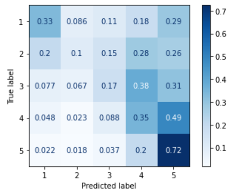
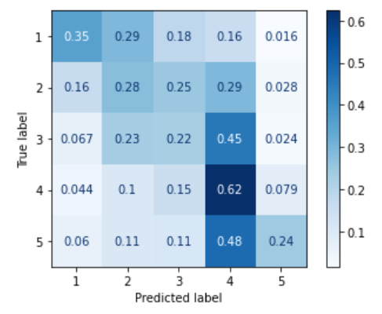

Macroaveraged MAE and RMSE for ordinal classification in Python
Ordinal classification
Ordinal classification, also known as ordinal regression, is a predictive modelling problem where the target variable is ordinal. Examples are star ratings in product reviews, Net Promoter Scores, or any other judgements that survey respondents express by picking a value on a scale containing a small set of ordered discrete numbers.
The problem can be approached either as a regression or a classification task, but evaluation measures commonly used for ordinal classification are error rates such as RMSE and MAE, because they - in contrast to classification evaluation measures such as F-score - apply smaller penalties for misclassifications into adjacent classes (e.g. confusing "4 star" and "5 star") than into classes on the opposite ends of the scale (e.g., confusing "1 star" and "5 star").
The problem with imbalanced classes
However, RMSE and MAE have an important drawback when used on datasets with highly imbalanced classes. The problem is that a trivial majority classifier will achieve misleadingly low error rates, similar to the micro-averaged F score, which will be misleadingly high on imbalanced data. If such an evaluation measure is used for model selection, a majority classifier will often be preferred over classifiers that are able to distinguish between non-majority classes.
Baccianella et al. (2009) proposed macro-averaged versions of RMSE and MAE, to be used for evaluation of ordinal classifiers. The evaluation measures are robust against to class imbalance.
The Python functions below calculate the macroaveraged MAE and macroaveraged RMSE rates.
import numpy as np
def groupby_labels(y, yhat):
"""Based on https://stackoverflow.com/questions/38013778/is-there-any-numpy-group-by-function
"""
m = np.stack([y, yhat]).T
m = m[m[:, 0].argsort()]
grouped_preds = np.split(m[:, 1], np.unique(m[:, 0], return_index=True)[1])[1:]
labels = np.unique(m[:, 0])
return labels, grouped_preds
def mae_macro(y, yhat):
"""Macroaveraged MAE
"""
labels, preds = groupby_labels(y, yhat)
mean_diff = np.array([np.abs(label - pred).mean()
for label, pred in zip(labels, preds)]).mean()
return mean_diff
def rmse_macro(y, yhat):
"""Macroaveraged RMSE
"""
labels, preds = groupby_labels(y, yhat)
mean_diff = np.array([np.power(label - pred, 2).mean()
for label, pred in zip(labels, preds)]).mean()
return np.sqrt(mean_diff)
if __name__ == "__main__":
y = np.array([1, 2, 3, 1, 2])
yhat = np.array([3, 2, 2, 1, 2])
print(mae_macro(y, yhat))
print(rmse_macro(y, yhat))
This code is on github.
Example
Here is an example comparing RMSE and MAE to their macroaveraged versions. The left plot is a confusion matrix for an ordinal classifier trained on imbalanced data. As one can see, it behaves a lot like a majority classifier: it tends to assign test instances of all the classes to "5", the majority class. The confusion matrix on the right is for an ordinal classifier trained on the same data after SMOTE oversampling. There are much fewer misclassifications of "1", "2", and "3" instances into the "5" class; the percentages close to the diagonal are greater than in the left plot.
|  |  |
A robust evaluation measure should account for the fact that the second classifier misclassified fewer test instances of non-majority classes than the first classifier.
The table below compares four evaluation measures for these two classifiers.
| Unbalanced | Balanced | |
| RMSE | 1.67 | 1.66 |
| Macro RMSE | 1.6 | 1.3 |
| MAE | 0.78 | 0.9 |
| Macro MAE | 1.09 | 0.89 |
The RMSE rates suggest that there is no difference in the qualify between the two classifers, while according to MAE, the classifier trained on unbalanced data is actually more accurate.
Both the macroaveraged rates, on the other hand, are lower for the classifier trained on balanced data, suggesting it should clearly be preferred.
Reference
S. Baccianella, A. Esuli and F. Sebastiani. (2009). "Evaluation Measures for Ordinal Regression," 2009 Ninth International Conference on Intelligent Systems Design and Applications, Pisa, Italy, pp. 283-287, doi: 10.1109/ISDA.2009.230.